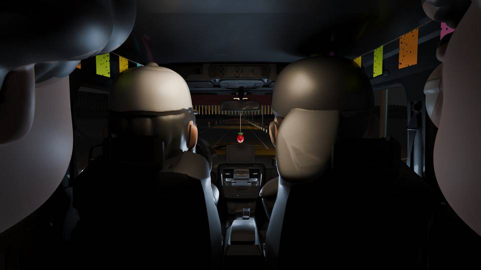
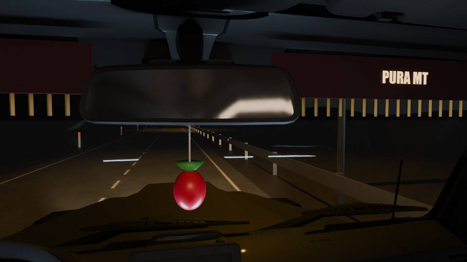
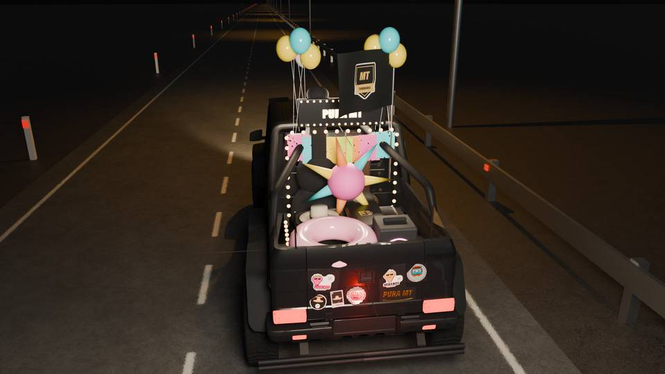
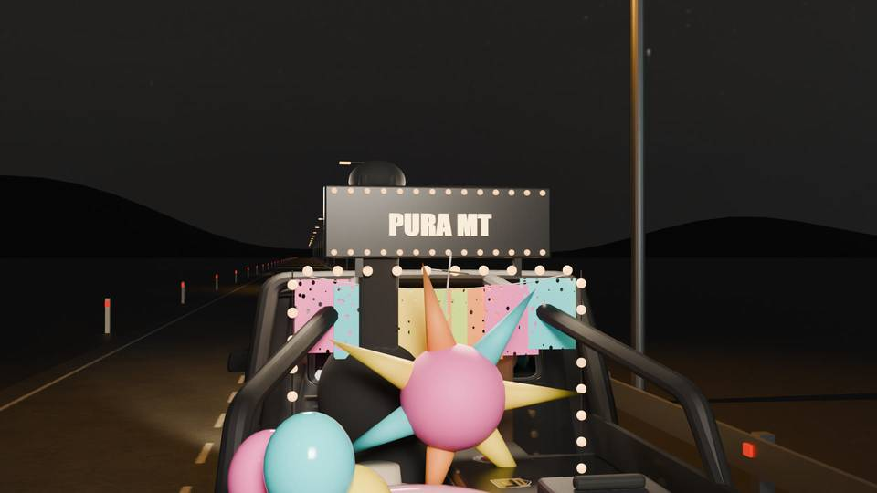
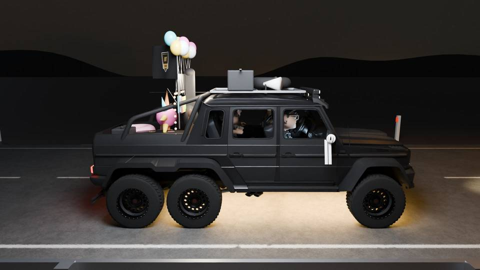
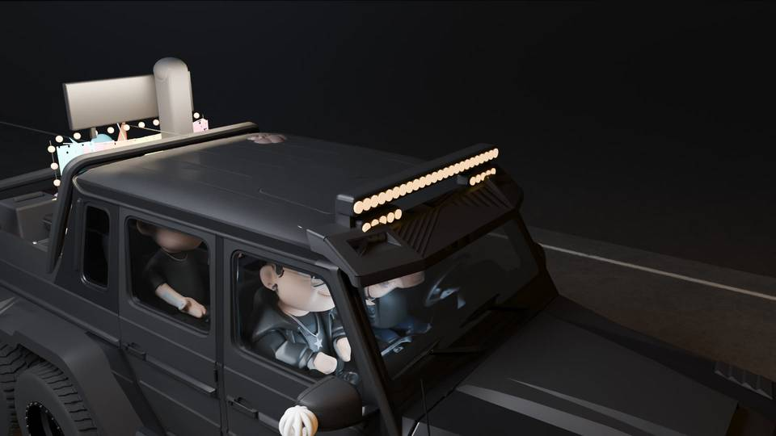
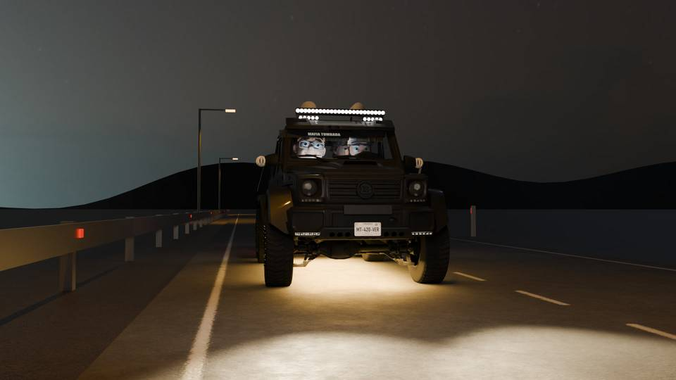
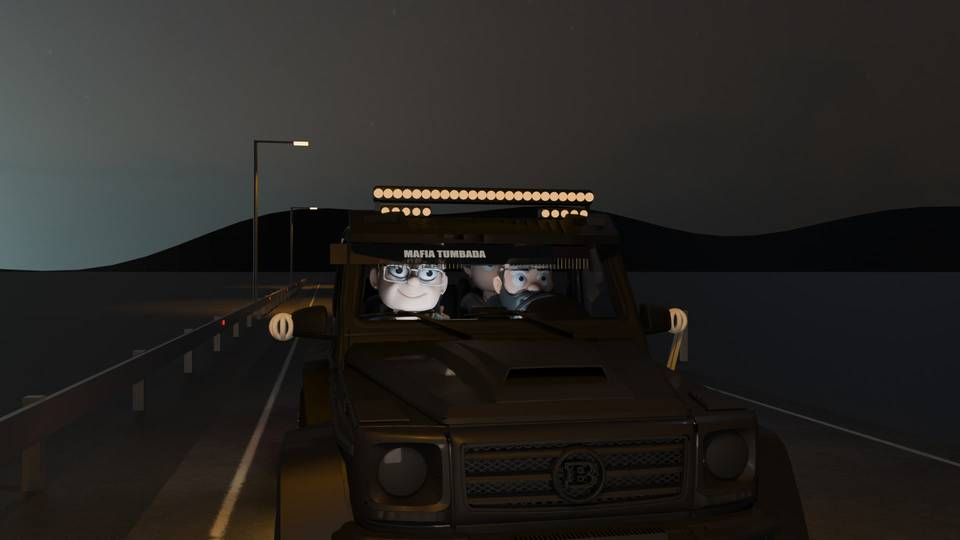

Utilería nueva y acomodo: A contra B por escena
Fotos reales, reglas y la lista de 14 props: referencias.md, reglas.md,
props.md. Cada imagen abre el still completo (1920×1080, 64 muestras, de noche). Los números salen de una sonda
por rayos desde la cámara de cada escena (scripts/props-medir.py); el look se juzga en los stills.
Escena 1 · Cabina (MÚSICA)
Cámara CAMINO[0], 20 mm, entre las cabezas de atrás. A: flecos de lado a lado (tapan el espejo), papel picado en el techo, banderín al centro, fresa larga. B: flecos partidos que dejan libre el espejo, sin papel picado, banderín en la esquina del copiloto, fresa corta.


- Regla 1 · zona tapada
- 3.4 % · FAIL
- Reglas 2-3 · props que se leen
- 2 (P3,P8) · PASS
- Regla 4 · luz total: zona vs prop con luz
- 23.4 vs nan · n/a

- Regla 1 · zona tapada
- 1.7 % · PASS
- Reglas 2-3 · props que se leen
- 1 (P3) · PASS
- Regla 4 · luz total: zona vs prop con luz
- 22.1 vs nan · n/a


- Regla 1 · zona tapada
- 3.77 % · detalle
- Reglas 2-3 · props que se leen
- 2 (P3,P5) · detalle
- Regla 4 · luz total: zona vs prop con luz
- 845.7 vs nan · detalle
Escena 2 · Caja (REDES)
Cámara VISTA_ESC2, 28 mm. Montón del piso: caja3 A (la elección #34 sigue abierta; los props nuevos van sólo en el arco, los rieles y la cabina). A: marquesina a toda luz, focos en rieles y arco, banderines, piñata y dos racimos de globos como estaban. B: la marquesina es el único pico y más tenue que las calcas, focos sólo en el arco, un racimo de globos bajo en la esquina, sin bandera.


- Regla 1 · zona tapada
- 0.2 % · PASS
- Reglas 2-3 · props que se leen
- 2 (P10,P9) · PASS
- Regla 4 · luz total: zona vs prop con luz
- 223.5 vs 104.6 · PASS

- Regla 1 · zona tapada
- 0.0 % · PASS
- Reglas 2-3 · props que se leen
- 2 (P10,P9) · PASS
- Regla 4 · luz total: zona vs prop con luz
- 223.7 vs 135.7 · PASS


- Regla 1 · zona tapada
- 0.0 % · detalle
- Reglas 2-3 · props que se leen
- 2 (P10,P9) · detalle
- Regla 4 · luz total: zona vs prop con luz
- 20.8 vs 848.5 · detalle
Escena 4 · Costado (LA BANDA)
Cámara a 6.2 m del lado del copiloto, 24 mm, luz de relleno (la opción de luz sigue abierta; los props con luz propia se leen con cualquiera). A: barra LED blanca, trompetas, parrilla con llanta, moños en los dos espejos, marquesina y focos a toda luz, luz bajo la carrocería. B: el techo lleva sólo la barra en ámbar, la caja un solo pico, nada sobre las ventanas.


- Regla 1 · zona tapada
- 0.0 % · PASS
- Reglas 2-3 · props que se leen
- 6 (P1,P10,P12,P6,P7,P9) · FAIL
- Regla 4 · luz total: zona vs prop con luz
- 57.5 vs 35.2 · PASS

- Regla 1 · zona tapada
- 0.0 % · PASS
- Reglas 2-3 · props que se leen
- 4 (P1,P10,P7,P9) · PASS
- Regla 4 · luz total: zona vs prop con luz
- 57.5 vs 35.4 · PASS


- Regla 1 · zona tapada
- 0.0 % · detalle
- Reglas 2-3 · props que se leen
- 4 (P1,P10,P7,P9) · detalle
- Regla 4 · luz total: zona vs prop con luz
- 531.9 vs 436.5 · detalle
Escena 6 · Placa (CONTRATACIÓN)
Cámara al frente, baja, 32 mm. A: barra LED blanca, trompetas, franja en el parabrisas, moños, luz bajo la carrocería, flecos completos. B: la placa sigue siendo lo más brillante tras los faros, así que la barra va en ámbar; sin trompetas; flecos partidos.


- Regla 1 · zona tapada
- 0.0 % · PASS
- Reglas 2-3 · props que se leen
- 2 (P1,P2) · PASS
- Regla 4 · luz total: zona vs prop con luz
- 45.5 vs 108.8 · FAIL

- Regla 1 · zona tapada
- 0.0 % · PASS
- Reglas 2-3 · props que se leen
- 2 (P1,P2) · PASS
- Regla 4 · luz total: zona vs prop con luz
- 45.4 vs 45.1 · PASS


- Regla 1 · zona tapada
- 0.0 % · detalle
- Reglas 2-3 · props que se leen
- 3 (P1,P2,P7) · detalle
- Regla 4 · luz total: zona vs prop con luz
- nan vs 145.9 · detalle
Preguntas para el dueño
- Por escena, ¿A, B o una mezcla? (Respuesta: una letra por escena, por ejemplo 1B 2B 4B 6B.)
- ¿Entra la marquesina PURA MT en el arco de la caja? Funciona con la caja3 A y la B (#34 sigue abierta: las calcas quedan 0 % tapadas con las dos).
- Barra LED del techo: (a) apagada en la escena 6, (b) ámbar tenue como luz de día, que empata con la placa, o (c) fuera.
- Color de la luz bajo la carrocería: (a) ámbar/oro, el de la marca, como en los stills, o (b) morado, como el Renotaxi de la referencia 17.
- Objetos religiosos (rosario en el espejo, Virgen en el tablero), comunes en cabinas mexicanas: (a) no, se queda la fresa, o (b) sí, uno, y ¿cuál?
- Cuernos sobre el cofre: (a) no, o (b) sí. Ojo: en las búsquedas salen ligados a trocas de cártel.
Fuera de estos stills: la escena 3 (un moño en el espejo del conductor, que sirve para las dos lecturas de #33) y la 5 (sólo se ve el cofre) no llevan stills nuevos; tampoco hay versión 9:16. El detalle de la escena 1 se hizo con flecos de 3 cm y la fresa a 7 cm; el still B final los lleva a 2.5 y 4.5 cm.